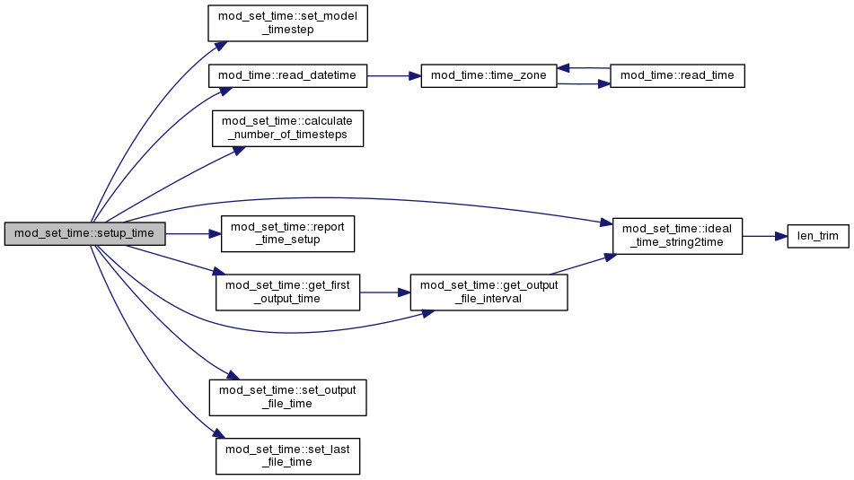

mod_set_time Module Reference
Data Types | |
| interface | set_startup_file_stack |
Functions/Subroutines | |
| subroutine | setup_time |
| subroutine | report_time_setup |
| subroutine | set_model_timestep |
| subroutine | ideal_time_string2time (string, flag, ntime, tstep) |
| integer(itime) function | calculate_number_of_timesteps (STIME, ETIME) |
| subroutine | set_last_file_time (NCF, STIME, STEP) |
| subroutine | set_startup_file_stack_by_time (STIME, STEP) |
| subroutine | set_startup_file_stack_by_cycle (step, ATIME) |
| subroutine | check_startup_file_dimensions |
| subroutine | get_first_output_time (STRING, FIRST_TIME) |
| subroutine | get_output_file_interval (STRING, INTERVAL) |
| subroutine | set_output_file_time (NCF, OUT_INTERVAL, NEXT_TIME, NEXT_STK, PREV_TIME, PREV_STK, STKLEN, STACK_MAX) |
Function/Subroutine Documentation
| integer(itime) function mod_set_time::calculate_number_of_timesteps | ( | type(time), intent(in) | STIME, |
| type(time), intent(in) | ETIME | ||
| ) |
| subroutine mod_set_time::check_startup_file_dimensions | ( | ) |
Definition at line 1420 of file mod_set_time.F.
| subroutine mod_set_time::get_first_output_time | ( | character(len=*), intent(in) | STRING, |
| type(time), intent(out) | FIRST_TIME | ||
| ) |
Definition at line 1487 of file mod_set_time.F.
Here is the call graph for this function:
Here is the caller graph for this function:
| subroutine mod_set_time::get_output_file_interval | ( | character(len=*), intent(in) | STRING, |
| type(time), intent(out) | INTERVAL | ||
| ) |
Definition at line 1507 of file mod_set_time.F.
Here is the call graph for this function:
Here is the caller graph for this function:
| subroutine mod_set_time::ideal_time_string2time | ( | character(len=*), intent(in) | string, |
| character(len=4), intent(out) | flag, | ||
| type(time), intent(out) | ntime, | ||
| integer(itime), intent(out) | tstep | ||
| ) |
Definition at line 1160 of file mod_set_time.F.
Here is the call graph for this function:
Here is the caller graph for this function:
| subroutine mod_set_time::report_time_setup | ( | ) |
| subroutine mod_set_time::set_last_file_time | ( | type(ncfile), pointer | NCF, |
| type(time), intent(out) | STIME, | ||
| integer(itime), intent(out) | STEP | ||
| ) |
| subroutine mod_set_time::set_model_timestep | ( | ) |
| subroutine mod_set_time::set_output_file_time | ( | type(ncfile), pointer | NCF, |
| type(time), intent(in) | OUT_INTERVAL, | ||
| type(time), intent(in) | NEXT_TIME, | ||
| integer, intent(in) | NEXT_STK, | ||
| type(time), intent(in) | PREV_TIME, | ||
| integer, intent(in) | PREV_STK, | ||
| integer, intent(in) | STKLEN, | ||
| integer, intent(in) | STACK_MAX | ||
| ) |
| subroutine mod_set_time::set_startup_file_stack_by_cycle | ( | integer(itime), intent(in) | step, |
| type(time), intent(out), optional | ATIME | ||
| ) |
Definition at line 1367 of file mod_set_time.F.
| subroutine mod_set_time::set_startup_file_stack_by_time | ( | type(time), intent(in) | STIME, |
| integer(itime), intent(out), optional | STEP | ||
| ) |
Definition at line 1283 of file mod_set_time.F.
| subroutine mod_set_time::setup_time | ( | ) |
Definition at line 47 of file mod_set_time.F.
Here is the call graph for this function:

Here is the caller graph for this function: